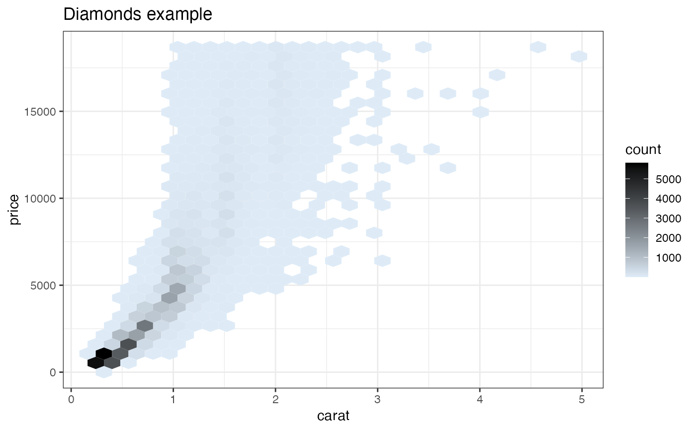

Build a hex bin plot with rational color coding.
HexBinPlot(
d,
xvar,
yvar,
title,
...,
lightcolor = "#deebf7",
darkcolor = "#000000",
bins = 30,
binwidth = NULL,
na.rm = FALSE
)data frame
name of x variable column
name of y variable column
plot title
not used, forces later arguments to bind by name
light color for least dense areas
dark color for most dense areas
passed to geom_hex
passed to geom_hex
passed to geom_hex
a ggplot2 hexbin plot
Builds a standard ggplot2 hexbin plot, with a color scale such that dense areas are colored darker (the default ggplot2 fill scales will color dense areas lighter).
The user can choose an alternate color scale with endpoints lightcolor
and darkcolor; it is up to the user to make sure that lightcolor
is lighter than darkcolor.
Requires the hexbin package.
if(requireNamespace("hexbin", quietly = TRUE)) {
if (requireNamespace('data.table', quietly = TRUE)) {
# don't multi-thread during CRAN checks
data.table::setDTthreads(1)
}
set.seed(634267)
dframe = data.frame(x = rnorm(1000), y = rnorm(1000))
print(HexBinPlot(dframe, "x", "y", "Example hexbin"))
diamonds = ggplot2::diamonds
print(HexBinPlot(diamonds, "carat", "price", "Diamonds example"))
# change the colorscale
print(HexBinPlot(diamonds, "carat", "price", "Diamonds example",
lightcolor="#fed98e",
darkcolor="#993404"))
}
